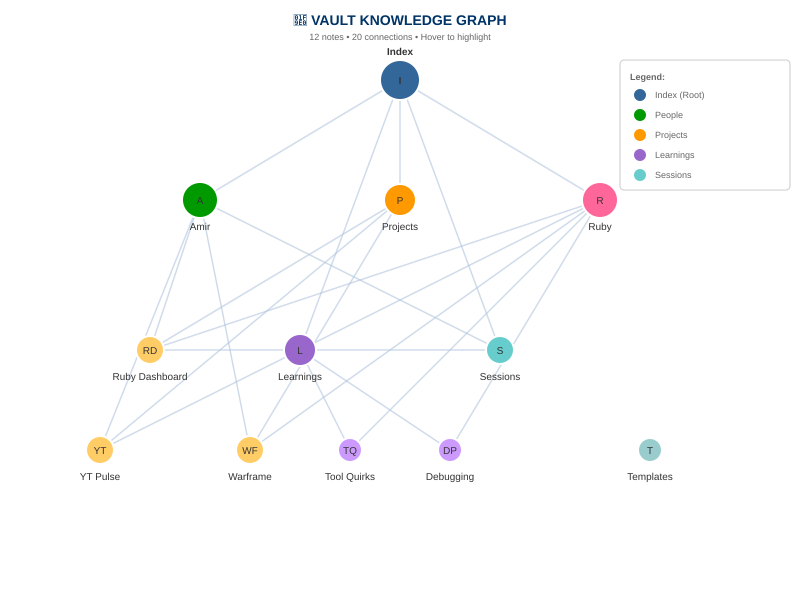

Knowledge Graph

12 notes - 20 wikilinks - Interactive hover
0
Total Notes
0
Total Lines
0
Characters
0
Wikilinks
Folder Breakdown
Notes Inventory
All Notes (19)
| Note | Folder | Tags | Modified |
|---|---|---|---|
| Index.md | Root | index | Jun 05 |
| Amir.md | People | person | Jun 05 |
| Ruby.md | People | person self | Jun 05 |
| Overview.md | Projects | projects | Jun 05 |
| Overview.md | Learnings | learnings | Jun 05 |
| tool-quirks.md | Learnings | learnings tools | Jun 05 |
| debugging-patterns.md | Learnings | learnings debugging | Jun 05 |
| 2026-06-05.md | Sessions | session | Jun 05 |
| 2026-06-06.md | Sessions | session | Jun 06 |
| 2026-06-09.md | Sessions | session | Jun 09 |
| 2026-06-10.md | Sessions | session | Jun 10 |
| 2026-06-11.md | Sessions | session | Jun 11 |
| 2026-06-14.md | Sessions | session | Jun 14 |
| 2026-06-15.md | Sessions | session | Jun 15 |
| 2026-06-18.md | Sessions | session | Jun 18 |
| 2026-06-27.md | Sessions | session | Jun 27 |
| 2026-06-28.md | Sessions | session | Jun 28 |
| session-summary.md | Templates | session template | Jun 05 |
Vault Automation
Active
Session Auto-Summarizer
Every 4 hours - Summarizes recent sessions
Active
Vault Auto-Committer
Every hour - Commits vault changes to git
Active
Session Journal Populator
Every 6 hours - Updates daily session notes
Quick Links